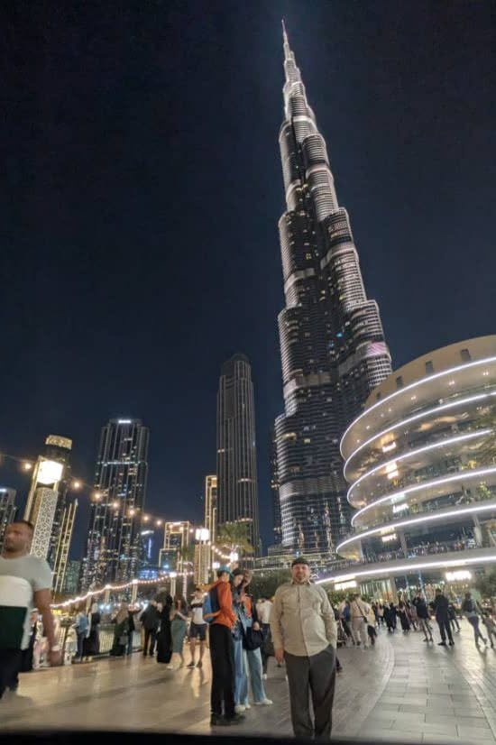

Cauchemar urbain
Les lumières scintillent, dans un éternel ballet,
La ville est une bête qui rugit la nuit et jamais ne se tait.
Ses lumières clignotent comme des yeux de serpent.
Un kaléidoscope de rêves, d'espoirs et de désirs ardents,
Les buildings, des titans de béton orgueilleux,
Touchent l’azur, défiant les cieux.
Et dans le flot humain, torrent sans rémission,
Je suis un grain de sable, perdu dans l’unisson.
Les foules m’emportent dans leur course insensée,
Un fleuve sans repos, où se noient mes pensées.
Chaque lumière brille, un œil qui me défie,
Chaque rue murmure un écho de ma vie.
Perdu dans la foule, je cherche un chemin,
Un cauchemar urbain, un éclat incertain.
Une quête d’identité au cœur de la cité,
Où l’âme se consume à vouloir exister.
Djamel Metref
At Yenni le 2 février 2025

← Tous les poèmes